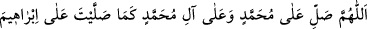
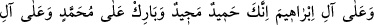
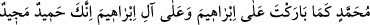

baban çok günahkar biriydi, ancak bana çok salât ederdi. İşte onun başına bu hal gelince
benden yardım istedi. Ben de ona yardım ettim. Çünkü ben bu dünyâda bana çok salevât
getirenlere hep yardım ederim.” buyurdu. O arada ben de uyandım. Bir de ne göreyim
babamın yüzü bembeyaz olmuş ve karnının şişi gitmiş.
Ey karanlıklarda (darda ve zorda) kalanın duâsına icâbet eden
Ey zarar, bela ve hastalıkları gideren Allâh’ım
Şu zillet ve meskenetim hakkında Nebî’ni şefaatçi kıl.
Ayıp ve günahlarımı örtüver, çünkü sen lütuf ve kerem sâhibisin.
Ka‘b b. Ucre (r.a.) şöyle demiştir: “Ey mü’minler! Siz de O’na salevât getirin ve
tam bir teslimiyetle selam verin.” âyeti nâzil olunca, kalkıp Hz. Peygamber (s.a.)’in
yanına vardık. Kendisine: “Yâ Rasûlallah, sana selam vermeyi bilip öğrendik. Peki
sana nasıl salât edeceğiz?” dedik. Hz. Peygamber (s.a.):
“__WORD__
(Allâh’ım, İbrâhim’e ve âilesine salât/rahmet ettiğin gibi Muhammed’e ve O’nun
âilesine de salât/rahmet et. Çünkü sen hamde lâyık ve yücesin. Allâh’ım, sen
İbrâhim’i ve âilesini mübarek kıldığın gibi Muhammed’i ve O’nun âilesini de
mübarek kıl. Çünkü sen hamde lâyık ve yücesin.)” deyin.” buyurdu.[291] Nitekim
Tefsîru’t-Teysîr’de böyle geçmektedir. Bu salevât, en sahih görüşe göre namazda son
teşehhüdde okunan salevâttır. Zâhidî, İmam Muhammed’den rivâyet ederek bunu
zikretmiştir.
Mânâsı; Allâh’ım, Muhammed’e kâmil bir salât ile salât et! demektir. Nitekim salâtın
mutlak olarak söylenmesi bu manaya delâlet eder. “ve Muhammed’in âilesine” sözü,
İbrâhim (a.s.)’a ve âilesine salât ettiğin gibi Muhammed’in âilesine de salât et,
demektir. Meşhur olduğu üzere (teşbîhte) kendisine benzetilenin daha güçlü olmasının
zorunluluğu bir problem teşkil etmez. Bu hususu Kuhistânî zikretmiştir.
ez-Zıyâü’l-ma‘nevî’de der ki: “Burada benzetme, kendisine salât getirilen bakımından
değil salâtın aslı bakımındandır. Çünkü bizim Peygamberimiz (s.a.) İbrâhim (a.s.)’dan
efdaldir. Buna göre yukarıdaki salevâtın mânâsı şöyledir: “Allâh’ım, İbrâhim (a.s.)’a
onun fazîleti ve şerefi kadar salât ettiğin gibi Muhammed’e de O’nun fazîleti ve şerefi
kadar salât et.” Bu ifade, “Babalarınızı andığınız gibi Allâh’ı anın!” (el-Bakara,
2/200) âyetine benzer. Yâni, babalarınızı onların size olan nîmet ve iyilikleri miktarınca
andığınız gibi Allâh’ı da Allâh’ın size olan nîmet ve ihsanları miktarınca anın, demektir.
Bir şey diğer bir şeye her yönden benzemiyorsa bir yönden benzetilmesi sahihtir.